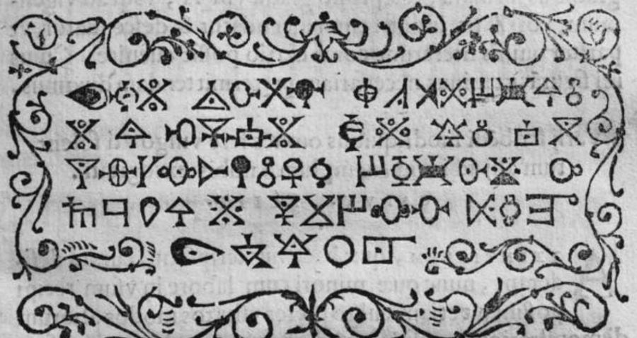
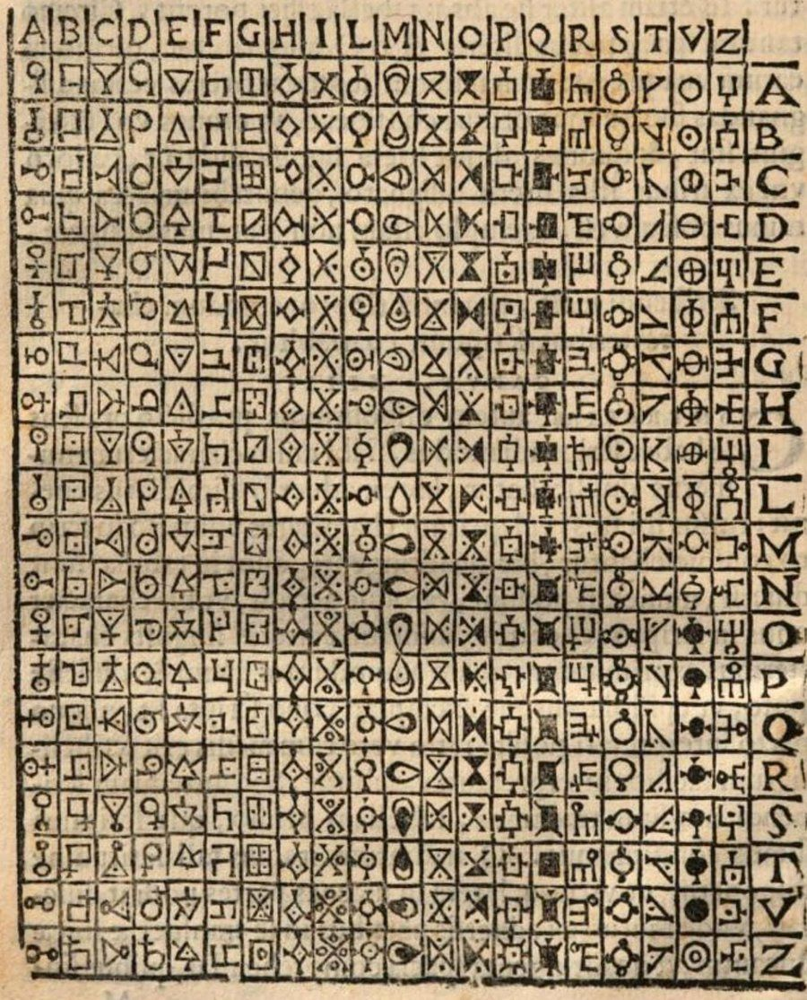

置換表（鍵）を作る
原典（1563年）の表はA B C D E F G H I L M N O P Q R S T V Zの20文字で、20×20＝400マスです。26×26はすべての英字を使える拡張版です。
同じシードを入れると同じ表を作り直せます（擬似乱数で作るので、表の推測しにくさはシードの推測しにくさで決まります）。空欄にすると暗号用の乱数（crypto.getRandomValues）で作ります。
表のマスに使わない3桁の数です（カンマか空白で区切る）。通信の合図などに取っておく使い方を想定しています。
表で引いてみる
置換表
暗号化
英字が奇数個のとき、最後の組を作るために足す文字です。表にある文字から選びます（既定: 26×26はX、20×20はZ）。
20×20の表だけで使います。当時はIとJ、UとVを同じ文字として扱っていたので置き換えます。K・X・Yは表にないので外します。英字以外（空白・記号・数字）は暗号化から外し、下に一覧で示します。
復号
原典の記号で暗号化・復号
1563年初版p.90の表（リヨン市立図書館所蔵本のスキャン、Public Domain Mark 1.0）から切り出した400個の記号を使います。
表は原典の20文字（J・K・U・W・X・Yなし）に固定で、上の見出しが1文字目、右の見出しが2文字目です。
平文を記号にする
記号を選んで読む
原典と同じ並びの表です。暗号文の記号と同じものを順に押すと、英字に戻します。原典は、探しやすいように似た記号を同じ列に集めています。表の中は矢印キーでも動けます。
原典の暗号文を読んでみる

上の表から記号を順に選ぶと読めます。最初の記号は、Mの列とVの行が交わるマスにあります。
答え: このツールで同じ例文を記号にした列
刷られた暗号文と1つずつ見比べると、60個すべてが同じ順に並びます。逆に引いた表（1文字目を横の見出し）では、最初の記号から食い違います。
通信シミュレーター
💡 使い方
平文（ふつうの文章）を入れてください。暗号文ではありません。
「送信＆受信」を押すと、いまの表で送る側の暗号化 → 数字の列の送信 → 受ける側の復号を通しで行います。冗字は表の既定（26×26はX、20×20はZ）、20×20の表にない英字は置き換えます。
通信結果
1. 送る平文
2. 暗号化して送るデータ
3. 受け取って復号したデータ
ポルタの二文字式暗号
ナポリの学者ジョヴァンニ・バッティスタ・デッラ・ポルタ（Giovanni Battista della Porta、1535年ごろ〜1615年）は、1563年に刊行した暗号書『De Furtivis Literarum Notis』の第2巻第13章で、平文の2文字を記号1つに置き換える表を示しました。

表の作り方と引き方
原典は、正方形の両辺を20等分して400のマスを作り、各マスに記号を1つずつ入れ、上辺と側面にアルファベットを並べると書いています。引き方は「1文字目の下にあり、2文字目と横から出会うマスの記号を取る」です。つまり上の見出しが1文字目、横の見出しが2文字目です。相手に知らせておけば逆に引いてもよい、とも書いています。
受け取った側は、曲尺（L字の定規）の角を記号に当てて上と横の文字を読みます。原典は、探しやすいように似た記号を同じ並びに置いたと述べています。
暗号史家のデイヴィッド・カーン（David Kahn）は『The Codebreakers』で、これを暗号学で最初の二文字式暗号と書いています。文字どうしを置き換える二文字式としては、19世紀のプレイフェア暗号が最初です。
本ツールの表も原典と同じ向きで、上の見出しが1文字目、左の見出しが2文字目です。記号の代わりに、各マスへ重複のない3桁の数を入れます。
20文字のアルファベット
原典の表の文字はA B C D E F G H I L M N O P Q R S T V Zの20文字で、J・K・U・W・X・Yはありません。原典の例文もUをVで書いています（VNIVERSA、CIVITAS）。本ツールの20×20の表では、J→I、U→V、W→VVに置き換え、K・X・Yは外して一覧に示します（「外す」を選ぶとJ・U・Wも外します）。
ポルタ自身の例文
MVLTIS CLADIBVS VLTRO CITROQVE DATIS ET ACCEPTIS, VNIVERSA PENE CIVITAS OCCVPATA EST, RELIQVA NON SCRIBAM, SED IN CONGRESSVM NOSTRVM RESERVABO.
試訳: 双方で多くの損害を与え、また受けたのち、町はほぼ全体が占領された。残りは書かず、会ったときのために取っておく。
英字は120個（60組）で、すべて20文字の表にあります。
同じ記号は本当に「まれ」か
原典は、2文字を1つの記号にするので、同じ記号が文中に2度出ることはまれだと述べています。しかし例文の120字の中でも、ISの組は3回、QV・ED・AT・ER・ST・REは2回ずつ出ます。英語の小説（ディケンズ『二都物語』）から切り出して数えると、次のとおりです。
| 英字の数 | 組の数 | 2回以上出る組の割合 | 最多の組の回数 |
|---|---|---|---|
| 100 | 50 | 29.4% | 3.1 |
| 200 | 100 | 45.4% | 4.8 |
| 1,000 | 500 | 82.4% | 18.2 |
英語ではTH・HE・ERなどの組が多く出ます。この偏りは、二文字式の暗号を解く手がかりになります（二文字の頻度分析）。「通信シミュレーター」で長めの文を送ると、同じ数が何度も出るのを確かめられます。
本ツールの表（鍵）と乱数
- シードを入れたときは擬似乱数（cyrb128＋sfc32）で表を作る。同じシードから同じ表を作り直せるが、表の推測しにくさはシードの推測しにくさで決まる
- シードが空欄のときは暗号用の乱数（crypto.getRandomValues）で作る。20×20の表の並べ方は約2の3850乗通りある
- 鍵はJSONで書き出し・読み込みできる（matrix[1文字目][2文字目]の形）
関連ツール
- Playfair CipherLab（Day027）: 5×5の表から規則で2文字を2文字に換える二文字式の暗号
- Hill CipherLab（Day093）: 行列の計算で複数の文字をまとめて換える暗号
- Polybius CipherLab（Day067）: 1文字を2つの数字に換える方陣
- Classical Cipher Structure Trainer（Day097）: 換字と転置の構造を学ぶ
出典
- G. B. della Porta, De Furtivis Literarum Notis, Naples, 1563, Liber II, cap. XIII（Internet Archive）
⚠️ セキュリティの注意
本ツールは教育目的のツールです。次の点に注意してください。
- ポルタの二文字式暗号は古典暗号で、現代の安全性の基準を満たしません
- 重要な情報の暗号化には使わないでください
- 暗号化・復号・表の生成はブラウザーの中だけで行い、外部へは送信しません